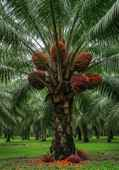

🧭
Gateway Location
Dzodze lies in southeastern Volta Region near the Ghana–Togo frontier, giving it strategic importance for commerce, mobility and cross-border activity.
Celebrate Ewe heritage, reconnect with home, experience culture, discover extraordinary talent and explore opportunities in oil palm, agriculture, tourism and enterprise.

Dzodze is the municipal capital of Ketu North in Ghana's Volta Region, close to the Ghana–Togo frontier. Its story is shaped by migration, chieftaincy, farming, trade, education, enterprise and a strong culture of homecoming.
Dzodze lies in southeastern Volta Region near the Ghana–Togo frontier, giving it strategic importance for commerce, mobility and cross-border activity.
Ewe identity, language, traditional music and dance—including Agbadza and Ageshe—are central to the cultural environment surrounding Deza.
Deza creates a meeting place for citizens in Ghana and the diaspora to reconnect with community, heritage, opportunity and one another.
The website profile connects the remembered “dzo” and “dze” story with settlement, the rise of oil-palm enterprise and the modern Deza movement.
Local historical accounts explain the name Dzodze through the Ewe words “dzo” (to fly) and “dze” (to land). The story is best presented as a local historical account.
Published sources in the profile support 2002 as the launch/institution period of the modern festival movement.
A Ghana News Agency report documents an annual Deza celebration in September 2005. The profile recommends resolving the exact founding chronology with primary Traditional Council records.
Deza is positioned as a cultural celebration and an economic-development platform centered on oil palm, youth talent, investment and community development.
Traditional authority remains central to Dzodze's identity, cultural continuity and festival organization.
The Traditional Council was formally inaugurated in 2024. The profile identifies Torgbuiga Dzoku V as Paramount Chief of Dzodze and President of the Council.
Deza brings tradition to life through experiences that can be documented in the website's annual programme and media archive.
Leadership names and protocol should be updated annually from the Dzodze Traditional Council before publication.
Oil palm is at the heart of Dzodze’s agricultural heritage and future, connecting farming and processing with packaging, logistics, research and agro-tourism.
The annual programme can expand with official dates and venues as they are confirmed.
Chiefs, queen mothers, elders, citizens and invited guests gather for the festival's central cultural celebration.
Music, dance, storytelling, regalia and cultural displays celebrating the heritage of Dzodze.
Music, dance, creative arts, sports, entrepreneurship, technology and innovation.
Oil-palm seedlings, farmers, processors, food products and local crafts.
Connect landowners, farmers, processors, banks, diaspora investors and development partners.
A platform for young women, culture, leadership and community service.
The profile positions Deza as an annual gateway to investment across agriculture, tourism, logistics, infrastructure, ICT and creative industries.
Oil palm, cassava, gari, rice, maize, food processing, value addition and branded consumer products.
Hotels, guest houses, restaurants, event venues, cultural tourism and palm heritage experiences.
ICT, digital services, skills training, youth enterprise, creative industries and media.
Investment listings should only be published after documented ownership, authorization and due diligence.
Discover the inspiring stories and achievements of Dzodze’s people—from academics and educators to farmers, entrepreneurs, athletes, artists, musicians, health professionals, public servants, technologists and members of the diaspora.
Recognise people whose work has contributed to Dzodze and beyond.
Create a platform for young builders, entrepreneurs, creatives and technologists.
Connect Dzodze's global community with emerging local talent and opportunity.
The final visitor guide can be updated with confirmed transport, accommodation, food, safety and programme information each festival season.
Deza is described by the Ketu North Municipal Assembly as an October celebration. Official annual dates should be published once confirmed by festival organisers.
View ProgrammeUse this space for official news, livestreams, photographs, videos, press material and festival archives.
Use Deza to support transparent community projects, cultural preservation, youth opportunity, agricultural development and the future of Dzodze.